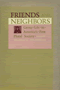

Browse
other Author lists:
A B C
D E F
G H I
J K L
M N O
P Q R
S T U
V W X
Y Z |
 |
Bachelors
of Science
Seventeenth Century Identity, Then and Now
Zack,
Naomi
264 pp • 6x9 • Spring 1996
paper 978-1-56639-436-9
cloth 978-1-56639-435-2 |
 |
Race
and Mixed Race
Zack,
Naomi
232 pp • 6x9 • Fall 1993
paper 978-1-56639-265-5
cloth 978-1-56639-064-4 |
|
Frank
Capra
Authorship and the Studio System
edited
by Sklar, Robert and Vito Zagarrio
304 pp • 5.5x8.25 • Spring 1998
paper 978-1-56639-608-0
cloth 978-1-56639-607-3
|

|
The Delinquent Girl
Zahn, Margaret A.
New in Paperback!
360 pp • 6x9 • Spring 2010
paper 978-1-59213-952-1
cloth 978-1-59213-951-4
|

|
The Disability Rights Movement
From Charity to Confrontation
Updated Edition
Fleischer, Doris Zames and Frieda Zames
360 pp • 7x10 • Fall 2011
paper 978-1-4399-0744-3
cloth 978-1-4399-0743-6
|

|
“A Road to Peace and Freedom”
The International Workers Order and the Struggle for Economic Justice and Civil Rights, 1930–1954
Zecker, Robert M.
430 pp • 6x9 • Fall 2017
paper 978-1-4399-1516-5
cloth 978-1-4399-1515-8 |
 |
The
Baltimore Book
New Views of Local History
edited
by Fee, Elizabeth, Linda Shopes and Linda Zeidman
256 pp • Fall 1991
paper 978-1-56639-184-9
cloth 978-0-87722-817-2 |
 |
Pluralism,
Corporatism, and Confucianism
Political Association and Conflict Regulation in the United States,
Europe, and Taiwan
Zeigler,
Harmon
272 pp • Spring 1988
cloth 978-0-87722-529-4 |
 |
The
Atlas of Pennsylvania
edited
by Cuff, David J., William J. Young, Edward K. Muller, Wilbur
Zelinsky and Ronald F. Abler
304 pp • 13.25x15.5 • Fall 1989
cloth 978-0-87722-618-5 |
 |
Chinatown
The Socioeconomic Potential of an Urban Enclave
Zhou,
Min, foreword by Alejandro Portes
316 pp • 6x9 • Spring 1992
paper 978-1-56639-337-9
cloth 978-0-87722-934-6 |

|
Contemporary Chinese America
Immigration, Ethnicity, and Community Transformation
Zhou, Min
328 pp • 6x9 • Spring 2009
paper 978-1-59213-858-6
cloth 978-1-59213-857-9
|

|
Equal Play
Title IX and Social Change
edited by Hogshead-Makar, Nancy and Andrew Zimbalist
328 pp • 7x10 • Fall 2007
paper 978-1-59213-380-2
cloth 978-1-59213-379-6
|

|
The
Bottom Line
Observations and Arguments on the Sports Business
Zimbalist, Andrew
312 pp • 6x9 • Fall 2006
paper 978-1-59213-513-4
cloth 978-1-59213-512-7
|

|
Circling the Bases
Essays on the Challenges and Prospects of the Sports Industry
Zimbalist, Andrew
234 pp • 5.5x8.25 • Fall 2010
paper 978-1-4399-0283-7
cloth 978-1-4399-0282-0
|
 |
Psychology
of Attitude Change and Social Influence
Zimbardo,
Philip G. and Michael R. Leippe
400 pp • Spring 1991
cloth 978-0-87722-852-3 |
 |
Silicone
Survivors
Women's Experiences with Breast Implants
Zimmermann,
Susan M.
240 pp • 6x9 • Spring 1998
paper 978-1-56639-612-7
cloth 978-1-56639-611-0
|
 |
Women
of Color in U.S. Society
edited
by Zinn, Maxine Baca and Bonnie Thornton Dill
360 pp • 6x9 • Fall 1993
paper 978-1-56639-106-1
cloth 978-1-56639-105-4
|
 |
The
Sixties Experience
Hard Lessons About Modern America
Morgan,
Edward P., foreword by Howard P. Zinn
357 pp • 6x9 • Spring 1991
paper 978-1-56639-014-9
cloth 978-0-87722-805-9
|

|
Higher Education and Democracy
Essays on Service-Learning and Civic Engagement
Saltmarsh, John and Edward A. Zlotkowski
416 pp • 6x9 • Fall 2010
cloth 978-1-4399-0037-6
|
 |
Orphanages
Reconsidered
Child Care Institutions in Progressive Era Baltimore
Zmora,
Nurith
256 pp • 6x9 • Fall 1993
paper 978-1-56639-465-9
cloth 978-0-87722-805-9
|
 |
A
World without Words
The Social Construction of Children Born Deaf and Blind
Goode,
David, foreword by Irving Kenneth Zola
336 pp • 5.5x8.25 • Fall 1994
paper 978-1-56639-216-7
cloth 978-1-56639-215-0
|
 |
Socio-Medical
Inquiries
Recollections, Reflections, and Reconsiderations
Zola,
Irving Kenneth
340 pp • Spring 1983
paper 978-0-87722-312-2
cloth 978-0-87722-303-0 |
 |
Missing
Pieces
A Chronicle of Living with a Disability
Zola,
Irving Kenneth, foreword by Nancy Mairs
258 pp • 5.8125x9 • Fall 2003
paper 978-1-59213-244-7
|
 |
How Many Exceptionalisms?
Explorations in Comparative Macroanalysis
Zolberg, Aristide R.
376 pp • 6x9 • Spring 2008
paper 978-1-59213-832-6
cloth 978-1-59213-831-9
|
 |
The
Unwanted
European Refugees from the First World War Through the Cold War
Marrus,
Michael R., foreword by Aristide R. Zolberg
432 pp • 6x9 • Spring 2002
paper 978-1-56639-955-5
|
 |
The
Social Logic of Politics
Personal Networks as Contexts for Political Behavior
edited
by Zuckerman, Alan S.
368 pp • 6x9 • Spring 2005
paper 978-1-59213-148-8
cloth 978-1-59213-147-1
|
|  |
Friends
and Neighbors
Group Life in America's First Plural Society
edited
by Zuckermann, Michael
270 pp • Spring 1982
cloth 978-0-87722-253-8 |
 |
Art
for The Masses
A Radical Magazine and Its Graphics, 1911-1917
Zurier,
Rebecca, introduction by Leslie Fishbein
240 pp • 9.25x12 • Fall 1987
paper 978-0-87722-670-3
cloth 978-0-87722-513-3 |
 |
Religion
and Economic Justice
edited
by Zweig, Michael
272 pp • 6x9 • Fall 1991
paper 978-1-56639-003-3
cloth 978-0-87722-847-9 |